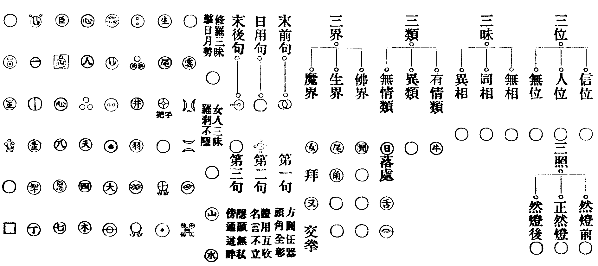
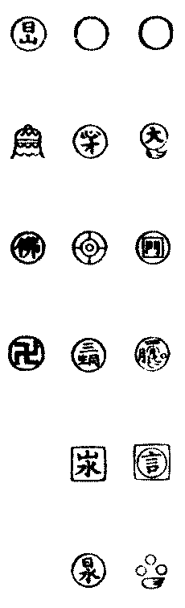

宗統編年卷之十四
五宗紀
宗具多義。曰始。初受命也。曰本。流源所自出也。曰繼。傳統紹述也。曰法。立法垂緒也。曰主。大綱主要也。曰尊。道德可尊也。曰眾。眾所崇仰也。臨濟。曹洞。溈仰。雲門。法眼。五祖。各首建宗旨。故曰五宗。
三峯藏曰。命將者必以兵符。悟心者必傳法印。符不契。即為姦偽。法不同。則為外道。自威音以來。無一言一法非五家宗旨之符印也。昔人證之。遂默契其微而不分。後人似之。故建立其宗以防偽。法法自明。心心相印。豈若室中密授之死法耶。嘗試原之。一○中。蚤具五宗宗旨矣。五宗各出一面。然有正宗。第一先出臨濟宗旨。此相拋出。直下斷人命根。於一○中。賓主輥輥。直入首羅眼中。所謂沿流不止問如何。真照無邊說自他。離相離名人不稟。吹毛用了急須磨。是也。次則雲門三句。一字關也。溈仰圓相。本於此也。法眼談教義於六相之外。曹洞分回互於黑白之交。只一○中。五宗具矣。
安隱忍曰。五宗各出一面。謂各出○相之一面以接人也。如洞宗以五位回互。或因偏以顯正。或即正以攝偏。或兼至而背向俱非。或兼却而通身尊貴。皆即一面而通諸面者也。至臨濟宗。則直下全拋出矣。故以臨濟為正宗。非簡偏也。猶曰五宗之長也。昔吉祥元實禪師。覩星月燦然有省。而未悟宗旨。曉趨天衣方丈。天衣聰問曰。五位君臣。如何話會。實曰。我這裏一位也無。衣令參堂。而謂侍者曰。這漢有個見處。奈不識宗旨何。入室次。衣令行者五人。分序而立。實至。俱召實上座。實於是密契宗旨。述偈曰。一位纔彰五位分。君臣合處紫雲屯。夜明簾卷無私照。金殿重重隱至尊。知此者。可與言圓相之開合矣。知相之開合。可與論五宗之同異矣。
或問祥符曰。五宗何以立也。祥符曰。以悟處不同。人根復異。垂慈立法。各主其要。以定綱宗。如世之三代。文質因革損益。互有不同。而要之。使人歸於中道也。大道之原。一尚不立。何有於五。一心之極。道尚難名。何有於宗。然會一心而歸大道。其本末偏全之候。始終小大之間。非一一洞明。不能毫釐無間。五祖各以其所悟之全體。立宗垂統。以詔天下後世。天下後世非透徹其所立之宗。大法不明。大道未達。猶殊方異俗。未可與言王化之全者也。故曰五宗建立。只完得個拈花公案。異流同源。殊途一致。非如世之分疆立界。各自稱尊。後之區別門庭者。或亦未之思夫。
首建臨濟宗(東土單傳第十一臨濟宗開宗第一)世祖
諱義玄。曹州南華邢氏子。幼而穎異。長以孝聞。精究毗尼。博賾經論。參黃檗嗣法。住鎮州臨濟。
宣宗己巳大中三年 正月五色雲中佛見金身。
首建臨濟宗第十一世祖嗣宗統(一十九年)。
書法(諸宗書嗣某宗統者。表宗系不紊也。臨濟書嗣宗統者。表單傳正脉也)發明(禮別子為祖。繼別子為宗。百世不遷者。別子之後也。達摩之傳。以南岳青原為別子。臨濟曹洞等。則南岳青原後之別子也。五宗既定。當各宗其始別之祖以承宗統焉。而臨濟遠遡達摩者。明單傳之統有在也)。
祖開法鎮州臨濟上座普化克符佐之 發明(佛祖出世。各有佐揚。濟祖開宗。二上座成褫之功不可泯。故大書之)。
學侶雲集。祖一日謂普化克符二上座曰。我欲於此建立黃檗宗旨。汝且成褫我。二人珍重下去。三日後普化却上來問。和尚三日前說甚麼。祖便打。三日後克符上來問。和尚前日打普化作甚麼。祖亦打。
三峯藏曰。原來臨濟不曾自立宗旨。亦不但是黃檗宗旨。逆而推之。迦葉釋迦。七佛威音一派威旨。幸從這裏建立。不被斷貫索禪壞却。只今還有抹得煞者麼。個個縛來好與三十棒。貴圖天下太平。復頌曰。三日前。三日後。普化克符俱漏逗。如今臨濟到三峰。與他一鏃三關透。
祥符蔭曰。濟祖不合平地上自栽荊棘。引得天下人揑目生花。即今還有似清風度荊棘林者麼。亦好縛來與他三十棒。何故。從前汗馬何須問。且只重論葢代功。
祖示人境縱奪克符上座領旨。
祖至晚小參曰。有時奪人不奪境。有時奪境不奪人。有時人境俱奪。有時人境俱不奪。克符問。如何是奪人不奪境。祖曰。煦日發生鋪地錦。嬰兒垂髮白如絲。符曰。如何是奪境不奪人。祖曰。王令已行天下遍。將軍塞外絕烟塵。符曰。如何是人境俱奪。祖曰。并汾絕信。獨處一方。符曰。如何是人境俱不奪。祖曰。王登寶殿。野老謳歌。符於言下領旨。
(克符頌曰。奪人不奪境。緣自帶誵訛。擬欲求玄旨。思量反責麼。驪珠光璨爛。丹桂影婆娑。覿面無差互。還應滯網羅。奪境不奪人。尋言何處真。問禪禪是妄。究理理非親。日照寒光澹。山搖翠色新。直饒玄會得。也是眼中塵。人境兩俱奪。從來正令行。不論佛與祖。那說聖凡情。擬犯吹毛劒。還如值木盲。進前求妙會。特地斬精靈。人境俱不奪。思量意不偏。主賓言不異。問答理俱全。踏破澄潭月。穿開碧落天。不能明妙用。淪溺在無緣)。
祖示三玄要。
僧問。如何是真佛。真法。真道。乞師開示。祖曰。佛者心清淨是。法者心光明是。道者處處無礙淨光是。三即一。皆是空名。而無實有。如真正作道人。念念心不間斷。自達摩大師從西土來。祇是覓個不受人惑的人。後遇二祖一言便了。始知從前虗用工夫。山僧今日見處與佛祖不別。若第一句中薦得。堪與祖佛為師。若第二句中薦得。堪與人天為師。若第三句中薦得。自救不了。僧便問。如何是第一句。祖曰。三要印開朱點窄。未容擬議主賓分。曰如何是第二句。祖曰。妙解豈容無著問。漚和爭負截流機。曰如何是第三句。祖曰。但看棚頭弄傀儡。抽牽全藉裏頭人。乃曰。大凡演唱宗乘。一句中須具三玄門。一玄中須具三要。有權有實。有照有用。汝等諸人作麼生會。
神鼎諲舉曰。若人問神鼎如何是第一句。曰蒼天蒼天。如何是第二句。曰有甚麼驢漢。如何是第三句。曰近前來向你道。纔近前便打。若恁麼會得。也不孤負祖師西來。若是從頭一一問過。幾時得休。佛法不是磨稜合縫的道理。似這一脉說話。須是久在他門風來始得。直是嫌佛不作。嫌法不說。方可如是。仔細珍重。
天童悟曰。今日陞座。有乞老僧說第一句者。老僧不覺失笑。殊不知第一句。乃古人之方便耳。若執第一句為實。則達摩單傳之旨。撲地了也。又不知未作意時。分明覿體見前。纔擬心來乞說時。脚跟下已蹉過了。直饒恁麼見得。領略得。已是言中取則。句裏承當。落在第二句了也。所謂承言者喪。滯句者迷。且作麼生是不承言。不滯句者。還委悉麼。不知誰是個中人。獨是出頭天外舉。
三峰藏曰。句中只具一玄一要。權實照用與汝分了也。且道臨濟為何說三。這裏明得。方不孤負先宗。切莫亂統。若道是一。又是瞎漢。
南嶽儲曰。一句中具三玄。三玄立。則一句破矣。一玄中具三要。三要立。則一玄破矣。故曰。以玄銷玄。以要銷要。又曰。退翁嘗說建立即是掃蕩。掃蕩却成建立。非無謂也。臨濟初謂黃檗佛法無多子。後來建立黃檗宗旨于一心上。唱明三真。首出三句。以定綱宗。實有所本也。世尊於靈山會上拈起一枝花。迦葉便破顏微笑。豈非無多子之佛法。世尊不合與賊過梯。無端道。我有正法眼藏。涅槃妙心。實相無相。微妙法門。付囑摩訶迦葉。故臨濟以無多子之法。演成三句。正見佛佛祖祖。同一鼻孔。而今十個五雙。誰不道臨濟建立。曾有一人具眼看破此老是掃蕩。前來板定個三句。首尾次第。毫不可移換。審如是。成什麼禪宗。一句中具三玄。一玄中具三要。堪與佛祖為師無疑矣。如何又說得他祇堪與人天為師。人天為師亦無礙。如何又好喚他自救不了。則三句之次第。顯然掃蕩盡情。三句為之掃蕩。而三玄立矣。豈非建立之掃蕩乎。他當日劈口吐出個黃檗佛法無多子。則他在學地時。蚤已建立了也。後來開演三真。建立三句。正掃蕩前面無多子的佛法。豈非掃蕩時。即是建立。
安隱忍曰。臨濟最初。三寸甚密。及乎舉了。又道個有權有實。有照有用。大似把火行山。汾陽雖解別轉旂鎗。未免使人向難分處作證。據三峯老子一串穿却。猶是看樓打樓。簡點將來。總欠悟在。安隱不惜眉毛。為你下個註脚。乃拈起拂子曰。會麼。若向玄中薦得。泥牛帶月眠霄漢。正在半途。若從要裏翻身。石女拋梭足錦文。全亡功照。然雖如是。醍醐毒藥。一道而行。
寶雲潛曰。天下之言臨濟者。非臨濟之意。臨濟之意。在法其無法。故馬祖曰。無門為法門。而世之刻畫臨濟者。皆竭力於有法。故非臨濟之意也。臨濟之意。在法之不測。而世之刻畫臨濟者。唯恐測之不盡。而言之不定。故非臨濟之意也。臨濟之意。在古今法有因革損益。變化無方。如鬼神不可端倪。而世之刻畫臨濟者。唯恐古異於今。今異於後。故非臨濟之意也。臨濟之意。在說一句法。而世之刻畫臨濟者。曲為破碎。說自說他。無所不至。而都不知一句之旨。故非臨濟之意也。臨濟之意單提第一句。故其言曰。一句語須具三玄門。一玄門須具三要。猶孔子之傳易而言大明終始。六位時成。時乘六龍以御天。知時之乘六龍。則知一句之具三要。而世之刻畫臨濟者。穿鑿三句。惟恐鑿之不工。而不知臨濟單用第一句。故非臨濟之意也。臨濟之意。如洛書之圖用逆也。而世之刻畫臨濟者。知順不知送。故非臨濟之意也。臨濟之意。在無心可以說法。而世之刻畫臨濟者。大略主於有心而后說法。故非臨濟之意也。臨濟之意。言立而言自變。有隨時而變者矣。有隨地而變者矣。有隨人而變者矣。而世之刻畫臨濟者。入其玄中。而杳不知其為變。故不知臨濟之意也。如古塔主者。又何足責也。
寶華震曰。一棒一喝一句下悟去。目前無一法可當情者。正是最初一步耳。若乃認定。便是實法繫縛人矣。故三峯師翁嘗言之。直須入三玄以銷盡。出三要以了盡。當知玄非玄妙之玄。法乃無法之法。
祥符蔭曰。句有甚麼第一第二第三。只在薦得時看下落。三玄三玄又作麼生具。全在演唱宗乘時具分曉。謂之三者。如∴字。如摩醯眼。分不得。合不得。自然而分。自然而合。亦如洞山五位。究竟只得一位。然一位立。自然而有五位面目。若不得五位參合。則位不圓。位不圓則墮偏墮正。落在聖凡。故曰。正中妙挾通回互。擬議鋒鋩失却威。金剛透匣誰能曉。唯有那吒第一機。
祖示四喝。
示眾曰。有時一喝如金剛王劍。有時一喝如踞地師子。有時一喝如探竿影草。有時一喝不作一喝用。汝等作麼生會。眾擬議。祖便喝。
祖禁參徒學喝。
祖應機多用喝。會下參徒亦學喝。祖曰。汝輩總學我喝。我今問汝。有一人從東堂出。一人從西堂出。兩人齊喝一聲。這裏分得賓主麼。汝且作麼生分。若分不得。已後不得學老僧喝。兩堂首座相見。同時下喝。僧問祖。還有賓主也無。祖曰。賓主歷然。乃召眾曰。要會臨濟賓主句。問取堂中二首座。
祖示四賓主。
示眾。參學之人。大須子細。如賓主相見。便有言論往來。或應物見形。或全體作用。或把機權喜怒。或見半身。或乘師子。或乘象王。如有真正學人便喝。先拈山一個膠盆子。善知識不辨是境。便上他境上作模作樣。便被學人又喝。前人不肯放下。此是膏肓之病。不堪醫治。喚作賓看主。或是善知識不拈出物。祇隨學人問處即奪。學人被奪。抵死不肯放。此是主看賓。或有學人應一個清淨境。出善知識前。知識辨得是境。把他拋向坑裏。學人言大好善知識。知識即云。咄哉不識好惡。學人便禮拜。此喚作主看主。或有學人披枷帶鎻。出善知識前。知識更與安一重枷鎻。學人歡喜。彼此不辨。喚作賓看賓。大德。山僧所舉。皆是辨魔揀異。知其邪正。
(僧問克符禪師。如何是賓中賓。符曰。倚門傍戶猶如醉。出言吐氣不漸惶。曰如何是賓中主。符曰。口念彌陀雙拄杖。目瞽瞳人不出頭。曰如何是主中賓。符曰高提祖印當機用。利物應和語帶悲。曰如何是主中主。符曰。橫按鏌鎁全正令。太平寰宇斬癡頑。曰既是太平寰宇。為甚麼却斬癡頑。符曰。不許夜行剛把火。直須當道與人看)。
安隱忍曰。臨濟。有四賓主。有賓主句。同中有別。而別中自同。不可混也。臨機勘辨之際。魔宮佛國。一時見前。譬如觀音大士。百千手眼。或慈或威。或定或慧。隨學家立地處。與之奪之。如珠之走監。圓轉橫斜。千態萬狀。所言四者。珠不出盤之候而已。昔善財童子。徧參五十三人善知識。於知識所。各得恒河沙等無量法。及見無厭足王之慘虐。勝熱婆羅門之熾然。婆須密女之淫艶。諸外道種之差別。未免望崖自屈。何故。垢淨未忘。而三昧之量未銷也。故云但可入佛。不能入魔。直至大樓閣中。從三昧起。忽然打失布袋。便將從前所得玄妙。盡底揚却。十方坐斷。一法不留。方契善財本來面目。然非五十三老。驅耕奪食。擒縱變化。不能至此耳。
祖示照用。
示眾曰。我有時先照後用。有時先用後照。有時照用同時。有時照用不同時。先照後用。有人在。先用後照。有法在。照用同時。驅耕夫之牛。奪饑人之食。敲骨取髓。痛下針錐。照用不同時。有問有答。立賓立主。合水和泥。應機接物。若是過量人。向未舉已前。撩起便行。猶校些子。
汾陽昭曰。先照後用。且共汝商量。先用後照。汝也是個人始得。照用同時。汝作麼生當抵。照用不同時。汝作麼生湊泊。
瑯琊覺曰。先照後用。露師子之爪牙。先用後照。縱象王之威猛。照用同時。如龍得水。致雨騰雲。照用不同時。提獎嬰兒拊憐赤子。此是古人建立法門。為合如是。不合如是。若合如是。紀信乘九龍之輦。不合如是。項羽失千里之騅。還有為瑯琊出氣的麼。如無。山僧自道去也。卓拄杖。
安隱忍曰。先師三峯藏甞云。待心死而伏誅。須切用前之照。先擒下而去縛。略挑後用之燈。實照用之真虎。譬如神醫。刮骨療病。必見病而下刀。若確定一方。妄加針割。是重增一病矣。古德云。纔有所重。便成窠臼。夫學者之窠臼不一。而宗師之照用臨時。自古聖人。莫不皆爾。如夾山之接洛浦。大覺之接興化。所謂心死而伏誅。擒下而去縛者也。葢二公之病。在有一橛硬禪之主宰。所以纔問便喝。將謂禪道如是而已。賴二大老臨之以法鏡。使其無逃隱處。然後乞命於我。故一言而起其痼疾。所云略挑用後之燈是也。
庚午大中四年。
辛未五年。
佛滅後一千八百年。
存獎禪師圓具。
壬申六年。
行僧成都福威寺定蘭然臂。
癸酉七年。
詔天下祖塔未賜諡號者所在以聞太常考行頒賜。
溈山首建第一世大圓祖示寂。
祖一日謂仰山曰。寂子速道。莫入陰界。仰山曰。慧寂信亦不立。祖曰。子信了不立。不信不立。曰只是慧寂。更信阿誰。祖曰。若恁麼即是定性聲聞。曰慧寂佛亦不見。上堂示眾曰。老僧百年後。向山下作一頭水牯牛。左脇書五字云。溈山僧某甲。此時喚作溈山僧。又是水牯牛。喚作水牯牛。又是溈山僧喚作什麼即得。凡敷揚宗教。四十餘年。首建宗旨三十五年。壽八十三。臘六十四。春正月十九日示寂。勅諡大圓禪師。塔曰清淨。
仰山祖傳示九十七種圓相(共一百零二相。除去重出五相。九十七個正)。
祥符蔭曰。溈仰父子機深。開鑿人天眼目。以垂範百世。故仰山所立宗旨。即書於溈山之後。非曰交互增輝也。但欲學者於無名無相處。更進一步耳。


開為百二十。合為九十七。一十九種門施設。
祥符蔭曰。仰山祖懸應西天祖師付囑圓相之記。實果位聖人。未登具即謁躭源。源謂曰。國師當時傳得六代祖師圓相。共九十七個。授與老僧。乃曰。吾滅後三十年。南方有一沙彌到來。大興此教。次第傳授。無令斷絕。我今付汝。當奉持。遂將其本付祖。祖接得。一覽便將火燒却。躭源一日問。前來諸相甚宜秘惜。祖曰。當看了。便燒却也。源曰。吾此法門。無人能會。唯先師。及諸祖師。諸大聖人。方可委悉。子何得焚之。祖曰。慧寂一覽。已知其意。但用得。不可執本也。源曰。然雖如此。於子即得。後人信之不及。祖曰。和尚若要。重錄不難。即重集一本呈上。更無遺失。後躭源上堂。祖出眾作此○相以手拓呈。却叉手立。源以兩手相交作拳示之。祖進前三步作女人拜。源點頭。祖便禮拜。後因僧參。問和尚還識字否。祖曰。隨分。僧以手畫此○相拓呈。祖以衣袖拂之。僧又作此○相拓呈。祖以兩手作背拋勢。僧以目視之。祖低頭。僧遶祖一匝。祖便打。像遂出去。又祖坐次。有僧來作禮。祖不顧。其僧乃問。師識字否。祖曰。隨分。僧乃右旋一匝曰。是甚麼字。祖於地上書十字酬之。僧又左旋一匝曰。是甚麼字。祖改十字作卍字。僧畫此○相以兩手拓。如修羅掌日月勢。曰是甚麼字。祖乃畫此○相對之。僧乃作婁至德勢。祖曰。如是如是。此是諸佛之所護念。汝亦如是。吾亦如是。善自護持。其僧禮謝。騰空而去。時有一道者見。經五日後遂問祖。祖曰。汝還見否。道者曰。某甲見出門騰空而去。祖曰。此是西天羅漢。故來探吾道。道者曰。某雖覩種種三昧。不辨其理。祖曰。吾以義為汝解釋。此是八種三昧。是覺海變為義海。體則同然。此義合有因有果。即時異時。總別不離隱身三昧也。觀此則知九十七種圓相。皆佛祖直示全提。百千法門。河沙妙用。皆從此出。而不與百千法門。河沙妙用為侶。祖稱東土小釋迦。其一十九門施設。非妙得祖佛機宜。何能顯密盡善如此。後之一橛頭禪。觸處偏枯者。須一一透過。如陣清風過荊棘林。了無掛礙。日用方可見行此事。人天眼目載五峯良五觀悟謂圓相總有六名。曰圓相。曰暗機。曰義海。曰字海。曰意語。曰默論。有云畫此[○@牛]相者。乃縱意。畫此[○@佛]者奪意。[○@人]此為相肯。○此為許相見。此為舉函索葢。答者當以此相。則函葢相稱。此為抱玉求鑑。答者當於其中書某字答之。[○@ㄙ]此為鈎入索續。答者當於厶字側添亻。乃問者鈎入。答者索續。共成寶器相。[○@(俬-禾)]此為已成寶器相。答者於中書土字答之。此為玄印玄旨相。獨脫超前眾相不著也。審如是。是猶市賈私為誌驗。三尺牧豎語之故。即無不喻。雖有聖智。不問不可強解矣。謂入聖位者。所建法幢乃如是乎。傀儡登場。癡人說夢。良可悲夫。
祥符蔭曰。華嚴經偈云。如來得菩提。實不繫於日。諸佛出世。以大事了畢為一期方便。祖師紹佛傳法。化緣示見。亦不過空中電影。不住長空。所以諸祖行蹟。年月或闕而不詳。以法垂後世。雖千古不隔目前。如親承面稟也。又心燈光照。焰布無涯。非如世間箕裘嗣續。乃稱紹述。溈仰雲門法眼三宗。迄今正眼昭然。流輝並耀。浩劫有窮。斯文未泯。豈謂其傳世未永。宗統遂湮乎。編年闕疑。正所以示信。心燈綿亘古今。彼此不隔一線。帝網重重。交光涉入。後起明宗者。百世不惑。是在其人矣。
甲戌八年。
乙亥九年。
禪師存獎來參。
侍中張重。起戒壇於涿郡。請獎統領講筵。獎罷講參祖。為侍者。一日元安(是為洛浦)來參。祖問甚處來。安曰。鑾城來。祖曰。有事相借問得麼。安曰。新戒不會。祖曰。打破大唐國。覓個不會底人也無。參堂去。獎隨後請問曰。適來新到。是成褫他。不成褫他。祖曰。我誰管你成褫不成褫。獎曰。和尚祇解將死雀就地彈。不解將一轉語葢覆却。祖曰。你又作麼生。獎曰。請和尚作新到。祖遂曰。新戒不會。獎曰。却是老僧罪過。祖曰。你語藏鋒。獎擬議。祖便打。至晚祖又曰。我今日問新到。是將死雀就地彈。就窠子裏打。及至你出得語。又喝起了。向青雲裏打。獎曰。草賊大敗。祖又打。
丙子十年。
丁丑十一年。
戊寅十二年。
禪師慧然住鎮州三聖院存獎禪師為第一座。
然初參仰山。後嗣祖。開法三聖。獎佐之為首座。常曰。我向南方行脚一遭。拄杖頭不曾撥著一個會佛法底人。然聞之。乃問曰。你具箇什麼眼。便恁麼道。獎便喝。然曰。須是你始得。
己卯十三年。
存獎禪師至大覺為院主。
魏府大覺和尚(名號闕)嗣祖。住魏府大覺。獎為院主。一日覺喚院主。我聞你道向南方行脚一遭。拄杖頭不曾撥著一個會佛法底。你憑個什麼道理。與麼道。獎便喝。覺便打。獎又喝。覺又打。獎來日從法堂過。覺召院主。我直下疑你昨日這兩喝。獎又喝。覺又打。獎再喝。覺再打。獎曰。某於三聖師兄處學得個賓主句。總被師兄折倒了也。願與某個安樂法門。覺曰。這瞎漢來這裏納敗闕。脫下衲衣。痛與一頓。獎於言下領旨。
考定(獎在三聖首眾。於大覺為院主。詳考其時。皆在咸通年前。葢祖大中初。開法鎮州臨濟。三聖大覺及獎等。先後從之參悟。逮咸通以後。祖因兵革。欲離河北。而三聖大覺。各俱領院。獎南方行脚。已回河北。其佐三聖大覺。當在斯時。於大覺言下。薦得臨濟先師於黃檗處喫棒底道理者。乃後來錄此公案。在濟祖已寂之後。追述其意而序之。非獎當時口道之語。燈錄諸書。皆因記錄而誤承之者也)。
禪師馬祖支下第二世普化振鐸而化。
化嗣盤山積。輔弼臨濟。將示滅。乃入市謂人曰。乞我一箇直裰。人或與披襖。或與布裘。皆不受。振鐸而去。祖令人送與一棺。化笑曰。臨濟饒舌。便受之。乃辭眾曰。普化明日去東門死也。至明日。郡人相率送化出城。化厲聲曰。今日葬不合青烏。乃曰。明日南門遷化。至明日出南門。人又隨之。化又曰。明日出西門方吉。至日人出漸稀。出已還返。人意稍怠。第四日自擎棺出北門外。振鐸入棺而逝。郡人奔走出城。揭棺視之已不見。惟聞空中鐸聲漸遠。莫測其繇。
宗統編年卷之十四